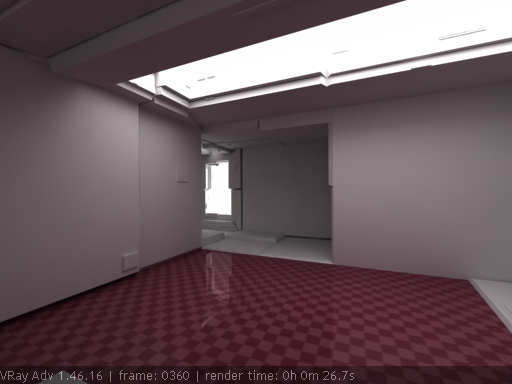
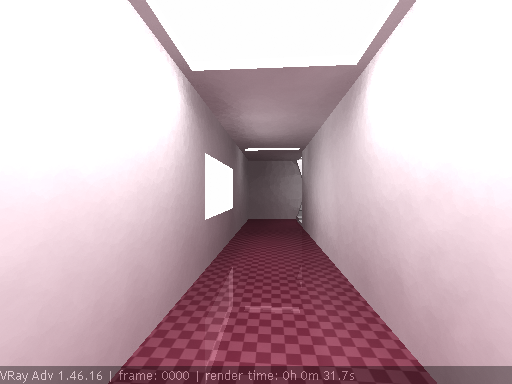
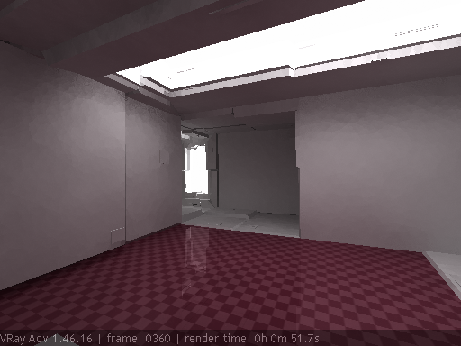
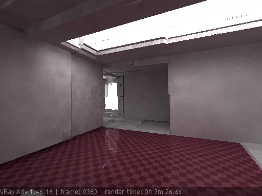
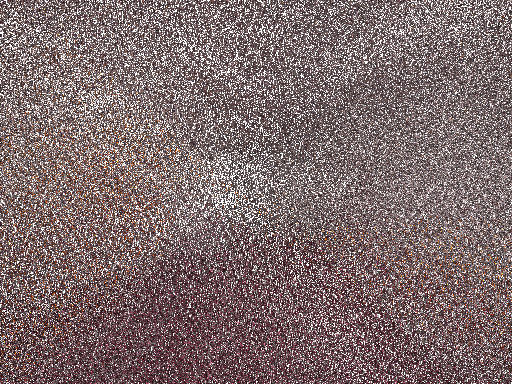
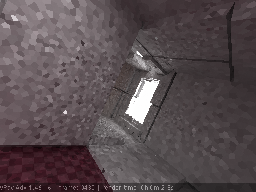
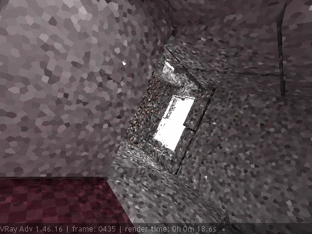
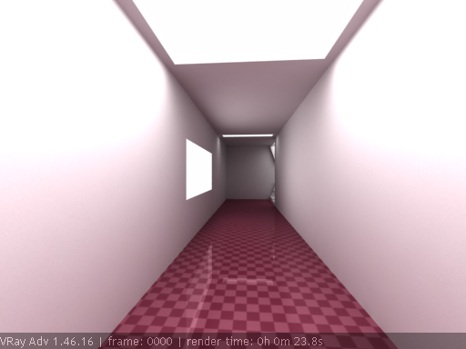

Rendering a Walk-Through Animation

Rendering a Walk-Through Animation Overview
In this tutorial, we will render a walk-through animation of a static scene, where nothing but the camera moves. We will use global illumination to light the scene, which makes the task somewhat complicated. GI is usually too slow to calculate from scratch and with sufficient quality for each frame of the animation. To optimize this process and save rendering time, we can use the fact that the scene is static and the camera is the only thing that moves. Most of the GI solutions used in V-Ray (irradiance map, photon map, light cache) are either fully or partially view-independent, and we can use this fact to reduce rendering times.
For this tutorial, we will use the irradiance map as a primary GI engine, and the light cache as a secondary engine. To make the process easier to understand, we will render the scene in three steps.
In the first step, we will calculate the light cache for the entire animation. In the second step, we will calculate the irradiance map. In the third step, we will render the final animation.
Note that you don't have to use this method to render walk-throughs. You can always use a slower brute-force approach and avoid having to deal with all the issues around precalculating the various GI solutions. However, you pay for this with render times.
Part I: Calculating the Light Cache
1.1. Open the starting scene.
1.2. Assign V-Ray as the current renderer.
1.3. Set the Background color in the 3dsmax Environment and Effects window to RGB 252, 252, 252.
1.4. In the Render scene dialog, turn Global illumination on and set both the Primary GI engine and the Secondary GI engine to Light Cache.
1.5. Set the Image sampler type to Fixed for faster previews.
1.6. Turn on Show calc. phase in the Light cache rollout.
1.7. Check the skylight Override MAX's checkbox in the Environment rollout.
1.8. Set the skylight color to RGB 252, 253, 255 and HSV (156, 3, 255).
1.9. Set the skylight color Multiplier to 4.0.
1.10. Uncheck the Default lights checkbox in the Global switches rollout. This will remove the default max lighting in the scene and it will by lit only by the environment skylight.
1.11. Go to the Camera rollout and change the Camera type to Fish eye.
1.12. Uncheck the Auto-fit checkbox, change the Dist value to 1.0 and Curve to 0.35. We set the camera to Fish-eye to produce a more interesting effect.
1.13. Render frames 0 and 360 for reference.


The light cache doesn't look bad, but we will need to calculate it for the entire walk-through animation, and not for a single frame only. Note that this is not strictly necessary - we can render the animation with the light cache being calculated each frame; however, rendering it only once will save rendering time, especially for long animations.
1.14. Set the light cache Mode to Fly-through. Make sure that the timeline animation range matches the range which you want to render. This is important because the light cache will look at the current timeline animation range when calculating the fly-through cache.
Since all the light cache samples will be distributed among all the animation frames, we will need to increase the light cache Subdivs value. The exact value depends on the quality you want to achieve and on your specific animation. If the camera moves slowly, or the path is relatively short (e.g. just one room of a house) then you can use lower Subdivs value, since most of the samples will fall in the same place anyways. If the camera moves quickly or covers larger parts of the scene, you will need more samples to get adequate coverage everywhere.
1.15. Set the light cache Subdivs to 2000.
1.16. Render frame 360 for example. Note that although we render only one frame, the Fly-through mode forces the light cache to be computed for the entire animation:

During the fly-through mode, the preview display of the light cache is not very useful, since it shows samples from the entire camera path. The following image shows the preview display while the light cache is being calculated:

Now that we have computed the light cache, we need to see if it is good enough for our needs. We can do this by rendering several different frames with the same light cache.
1.17. Save the light cache to disk, for example, to lightcache.vrlmap.
1.18. Set the light cache Mode to From file and select the saved file name.
1.19. Change the Filter in the Light cache rollout from Nearest to None. Now we can see better the samples' size.
1.20. Render frame 435:

You can notice that in places where the camera gets close to a wall in the scene, the light cache samples are smaller and more noisy. This is because the light cache Scale is set to Screen by default. This is fine for still images, but for animation we would like a more even sample distribution. To achieve this, we will need to use the World option.
1.21. Set the light cache Scale to World.
Now we have to determine a good Sample size for the scene. This can be done, for example, by creating a geosphere directly in the camera viewport or a Tape object and using it to visualize the sample size. For our scene, a sample size of about 2.0 seems to be good enough (the scene is in Generic units). In general, you should make the Sample size as large as possible without getting artifacts (light leaks, etc.). Even if you are getting some light leaks, it may be possible to remove them by reducing the filter Interp. samples value.
1.22. Set the light cache Sample size to 2.0.
Keep in mind that when you use the World scale, you must make sure that your scene is not too large (e.g. with a large ground plane) or that the light cache samples are not too small, otherwise you can run out of memory for the light cache. This is not such a problem for the Screen mode, since surfaces that are far away from the camera will get fewer samples anyways. For exterior scenes, it is recommended to use the Screenmode always.
1.23. Change the light cache Mode back to Single frame and lower the Subdivs to 500 just to check if the sample size is adequate. Here is an example of frame 435:

The samples are equal in size everywhere and they are just big enough so we don't get artifacts on the image.
1.24. Set the light cache Mode to Fly-through again.
1.25. To smooth out the light cache a little bit, increase the the Subdivs to 3300.
1.26. Change the Filter back to Nearest.
1.27. Render frame 360:

The calculation time is longer now due to the increased samples number.
1.28. Save the light cache and set the mode to From file again.
You may notice that the light cache file has become bigger in size. This is because there are more samples in the light cache, partly because of the World scale mode - the same amount of samples are taken everywhere in the scene (in Screen mode, the sample size increases as the samples get farther from the camera, which leads to less samples).
Now we can render several different frames to make sure that the light cache is adequate for our animation.
1.29. Render a few frames.
It looks like the light cache is good and we can move on to the next part - calculating the irradiance map.
Part II: Calculating the Irradiance Map
Compared to the light cache, the irradiance map may take significantly more time to calculate. This is because the light cache provides a very crude and undetailed lighting solution. The irradiance map, on the other hand, takes care of the small GI shadows in the scene.
Note that the irradiance map cannot be calculated through backburner. It must be calculated on a single machine. This is because we will use the Multiframe incremental Mode for the irradiance map.
2.1. Set the primary engine to Irradiance map.
2.2. Set the irradiance map Mode to Multiframe incremental.
2.3. Check the Show calc. phase checkbox.
Since the camera moves quite slowly, there is no need to render every single frame of the animation at this stage. We can get an adequate irradiance map by rendering every 10th frame, for example. If the camera moves faster, we will need to render more frames, for example every 5th frame.
2.4. Set 3ds Max to render every 5th frame from the Common tab of the Render scene dialog.
2.5. Turn on the Don't render final image option in the Global switches rollout, since we are not rendering the final animation yet and we don't need the final frames.
2.6. Render the entire sequence.
2.7. Save the irradiance map to file, for example, irmap.vrmap.
2.8. Set the irradiance map Mode to From File with the saved file.
Now we have one irradiance map for entire animation sequence. We can render a few frames to make sure everything is ok.
2.9. Turn off the Don't render final image option.
2.10. Render frames 0 and 360 from the animation:

The two images above were rendered with the settings used for the final animation in Part III.
Now we are ready to render the final animation.
Part III: Rendering the Final Animation
For the final animation you can use backburner with the saved irradiance map either on the client pc or locally on each server machine. In either case, you must make sure that each render slave can find the irradiance map in the location specified in the From file parameter for the irradiance map.
3.1. Set the Image sampler type to Adaptive subdivision with Min/Max rate to 0/3 for better antialiasing quality. You can also check the Normals checkbox to avoid flickering problems with small details in the scene.
3.2. Make sure the irradiance map Interpolation type is set to Density-based. This will enable the irradiance map to pick the closest available samples from the cached solution.
3.3. Set 3ds M ax to render every single frame.
3.4. Render the final animation.
Here is the ending scene.
Here is the final animation that you should get if you have followed the tutorial correctly (8 MB). Your browser does not support the HTML5 video element
Notes
-
We are not using glossy reflections in this scene, but if you are using them and not using the Use light cache for glossy rays option at the same time, then you can set the Secondary GI engine to None for the final animation. This is because you won't need the light cache and turning it off will save memory.
Discussion
In this section, we have added some questions about this tutorial that were asked on our online forum, along with the respective answers.
Q: Did you render out to consecutive images and then compile the avi or was it straight out to avi?
A: The animation was first rendered out to .png images, and then compiled into an .avi. That way, you won't lose all rendered frames if something goes wrong in the middle of the rendering... and also you can play with the compression settings later.
Q: Why did you choose Multiframe incremental over Incremental add to current map mode? What is the difference between the two that would cause you to choose one over the other? I ask because I've never used Multiframe incremental and have always used the Incremental add to current map.
A: The only difference is that the Multiframe incremental mode will delete the map in memory at the start of the rendering. With the Incremental add mode, the current map is not deleted.
Q: I just wanted to clarify... It is possible to use Incremental add to current map mode in conjunction with backburner without any problems (i.e. flicker)? Does backburner handle frame allocation okay without max saving any files? Reading your post above, I get the feeling you are suggesting that you need to send different sections of the animation to each render-node.
A: Yes, you can render different sections on different nodes, but you must merge the resulting irradiance maps manually with the irradiance map viewer in the end, before rendering the final animation. Also, you must make sure that each section is allocated to one single render node only.
Q: I must make an animation with a spray which you can see in the image upload, and I have many glossy reflect and refract, if I follow your tut how can I make my final setup? With light cache for second bounce and Use light cache for glossy rays or without light cache and none for the second bounce? Does Use light cache for glossy rays and ir map in first bounce work fine?
A: You can have the light cache saved with the irradiance map. If done so, you can actually just turn off secondary bounces which will save memory as you won't have to load the light cache. However, if you have the light cache help precompute the glossiness with the Use light cache for glossy rays option, then you'll need to go ahead and load the light cache when rendering.